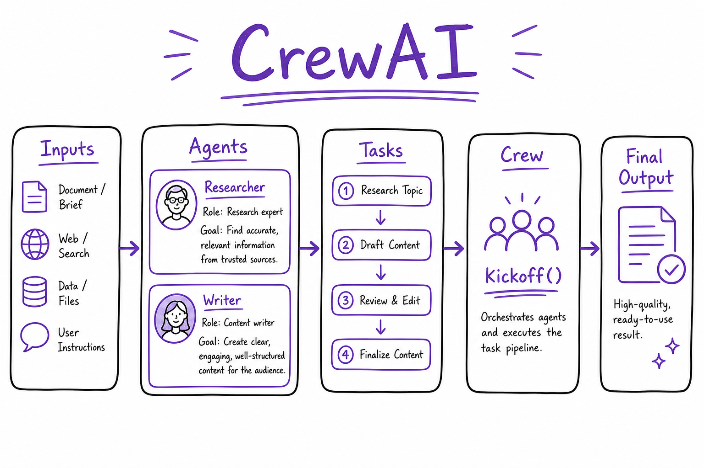
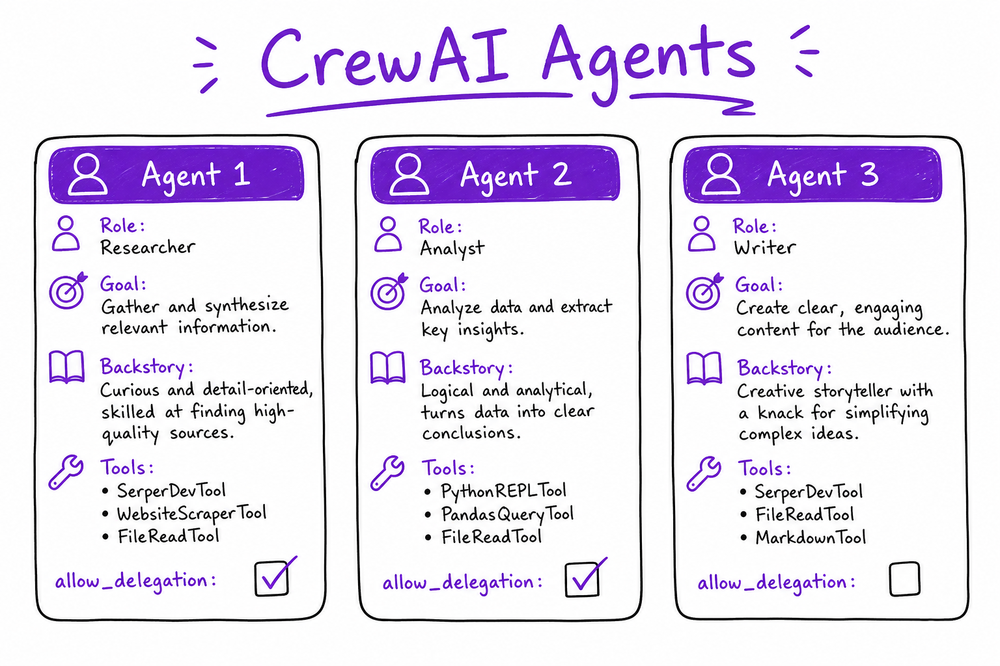
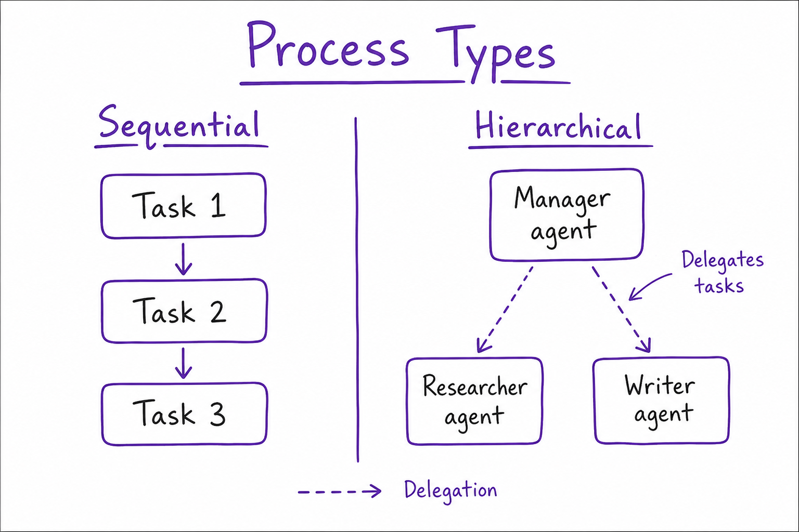

CrewAI // AI Tech
Role-based multi-agent framework: Agents with backstory, Tasks with expected output, Crew orchestration (sequential, hierarchical). Fast path from idea to research-style agent teams.

CrewAI flow: define Agents (role, goal, tools) → Tasks (description, agent, context) → Crew(process=sequential|hierarchical) → kickoff() → consolidated output.
01 — What & Why
Problem: Multi-step workflows (research → analyze → write) map naturally to roles, but hand-rolling LangGraph nodes for every demo is slow. CrewAI offers declarative Agents, Tasks, and Crew processes.
Functional
- Define agents with role, goal, backstory, and tool subsets
- Chain tasks with explicit dependencies via
context=[prior_task] - Sequential or hierarchical (manager delegates) execution
kickoff(inputs={...})runs full workflow and returns consolidated output
Non-Functional
- Cost — multiple LLM calls per crew run; cap tasks and delegation
- Control — less fine-grained than LangGraph for HITL and audit
- Speed to prototype — excellent for research/report pipelines
Production systems needing approval gates often migrate to LangGraph. CrewAI sits above LLM APIs and often uses LangChain tool wrappers. Multi-agent patterns: Multi-Agent Orchestration.
When crews beat single agents
- Output requires distinct expert personas (legal vs technical vs executive tone)
- Pipeline has 3+ stages with different tool sets per stage
- Research tasks benefit from verbose backstory-driven thoroughness
- You need a demo in hours, not days of graph engineering
When to skip CrewAI
- Single retrieval + answer (use LCEL or LlamaIndex)
- Hard compliance gates on each tool call (use LangGraph HITL)
- Sub-100ms routing (no LLM orchestrator)
01a — Core Concepts
| Term | Definition | Gotcha |
|---|---|---|
| Agent | role + goal + backstory + tools + LLM | Backstory strongly shapes tone and thoroughness |
| Task | description + expected_output + assigned agent | context=[task1] injects prior task output |
| Crew | agents + tasks + process + optional manager | kickoff() is synchronous by default |
| Process | sequential | hierarchical | consensual | Hierarchical requires manager_llm |
| Delegation | Agent asks another agent for help | allow_delegation=True increases cost unpredictably |
01b — API / Interface Surface
from crewai import Agent, Task, Crew, Process
from crewai.tools import tool
@tool
def web_search(query: str) -> str:
"""Search the web for current information."""
return search_api(query)
researcher = Agent(
role="Senior Researcher",
goal="Find accurate, cited facts on {topic}",
backstory="You are a meticulous analyst who verifies sources.",
tools=[web_search],
verbose=True,
)
writer = Agent(
role="Technical Writer",
goal="Produce clear markdown reports",
backstory="You translate research into executive summaries.",
)
t1 = Task(
description="Research {topic}. Include 5+ bullet facts.",
expected_output="Bullet list of verified facts with sources",
agent=researcher,
)
t2 = Task(
description="Write a 500-word report from research.",
expected_output="Markdown report with headings",
agent=writer,
context=[t1],
)
crew = Crew(
agents=[researcher, writer],
tasks=[t1, t2],
process=Process.sequential,
verbose=True,
)
result = crew.kickoff(inputs={"topic": "RAG trends 2025"})
print(result.raw)Crew configuration knobs
| Parameter | Effect |
|---|---|
verbose=True | Print intermediate agent reasoning to stdout |
memory=True | Short-term memory within kickoff (not cross-session) |
max_rpm | Rate limit LLM requests per minute |
share_crew | Allow agents to see each other's task context |
planning=True | Optional planner step before tasks (extra LLM call) |
02 — When to Use / When NOT
| Case | CrewAI? | Alternative |
|---|---|---|
| Research report crew (3–5 roles) | Yes | Manual LangGraph subgraphs |
| Content pipeline prototype | Yes | Custom scripts |
| Production support bot with HITL | No | LangGraph + interrupts |
| Single tool-calling agent | No | One ReAct agent sufficient |
| Strict per-step audit trail | Maybe | LangGraph checkpoint history |
03 — Architecture
Inputs (topic, params)
|
v
+---------+
| Crew |
+----+----+
|
+----+----+----+----+
v v v v
Task1 Task2 Task3 ... (each bound to one Agent)
| |
v v
Agent A Agent B (LLM + tools + backstory)
|
v
Consolidated Output (result.raw)Cost model (typical research crew):
Task 1 (research + search tool) ~ 3-8 LLM calls
Task 2 (analysis) ~ 2-4 LLM calls
Task 3 (writing) ~ 2-3 LLM calls
Hierarchical manager overhead ~ 1-2 LLM calls per task
Total ~ 10-20 LLM calls per kickoff() 04 — Deep Dive: Agents

Agent cards: role, goal, backstory, tools, allow_delegation flag.
Each agent is an LLM persona with optional tools. Backstory acts as a soft system prompt — invest time writing it.
- Assign least-privilege tools per agent (researcher gets search, writer gets none)
allow_delegation=Truelets agent spawn sub-requests to peers — use sparinglymax_iter/ RPM limits on underlying LLM to cap runaway loops- Local models via OpenAI-compatible endpoint (vLLM)
| Agent field | Purpose | Tip |
|---|---|---|
| role | Short job title for the agent | Shown in logs and traces |
| goal | Measurable objective | Can include {input} placeholders |
| backstory | Persona and constraints | Strongest behavior lever |
| tools | Allowed capabilities | Least privilege per agent |
| allow_delegation | Can ask peer agents | Default False in prod |
05 — Deep Dive: Tasks
expected_output acts as an implicit rubric the agent optimizes toward — always specify format and length.
t_research = Task(
description="Research {product}. Focus on pricing and competitors.",
expected_output="JSON: {facts: [], sources: []}",
agent=researcher,
)
t_write = Task(
description="Draft blog post from research.",
expected_output="800-word markdown with H2 sections",
agent=writer,
context=[t_research], # prior output injected
async_execution=False,
)async_execution=Trueon independent tasks for parallelism- Output of context tasks appended to prompt automatically
- Use structured expected_output (JSON schema description) for downstream parsing
06 — Deep Dive: Process Types

Sequential vs hierarchical: manager agent routes tasks to researcher and writer.
Sequential
Tasks run in list order. Predictable, easy to debug. Default for pipelines.
Hierarchical
Manager LLM delegates tasks to worker agents dynamically. More flexible, less predictable, higher cost.
crew = Crew(
agents=[researcher, writer, editor],
tasks=[t1, t2, t3],
process=Process.hierarchical,
manager_llm=ChatOpenAI(model="gpt-4o-mini"),
)Cap total tasks at 5–8 for cost control. Log manager decisions for post-hoc debugging.
Full hierarchical crew example
from crewai import Agent, Task, Crew, Process
from langchain_openai import ChatOpenAI
manager_llm = ChatOpenAI(model="gpt-4o-mini", temperature=0)
researcher = Agent(role="Researcher", goal="Gather facts", backstory="Thorough analyst.", tools=[search_tool])
analyst = Agent(role="Analyst", goal="Synthesize insights", backstory="Pattern finder.")
writer = Agent(role="Writer", goal="Draft report", backstory="Clear technical writer.")
t_research = Task(description="Research {topic}", expected_output="10 bullet facts", agent=researcher)
t_analysis = Task(description="Identify 3 themes", expected_output="Theme list + rationale", agent=analyst, context=[t_research])
t_draft = Task(description="Write executive summary", expected_output="400-word markdown", agent=writer, context=[t_analysis])
crew = Crew(
agents=[researcher, analyst, writer],
tasks=[t_research, t_analysis, t_draft],
process=Process.hierarchical,
manager_llm=manager_llm,
verbose=True,
)
print(crew.kickoff(inputs={"topic": "enterprise RAG"}).raw)
07 — Deep Dive: Tools
CrewAI tools wrap LangChain tools or custom functions with descriptions. Same security model as any agent framework.
- Validate JSON args before API calls or SQL
- Read-only tools by default; HITL on writes (publish, delete, charge)
- RAG tool can wrap LlamaIndex query engine or LangChain retriever
Deep dive: Tool Calling & Functions.
08 — CrewAI vs LangGraph
| Dimension | CrewAI | LangGraph |
|---|---|---|
| Abstraction | High — roles/tasks | Low — nodes/edges/state |
| HITL | Limited | interrupt_before + Command |
| Checkpoint | Basic | Postgres durable per thread |
| Routing | Process enum + manager | Conditional edges in code |
| Best for | Research crews, demos | Production agents, approvals |
Many teams prototype in CrewAI, then reimplement critical paths in LangGraph for production. See Multi-Agent Orchestration.
CrewAI + RAG integration pattern
from crewai.tools import tool
from llama_index.core import VectorStoreIndex
index = VectorStoreIndex.from_vector_store(existing_store)
engine = index.as_query_engine(similarity_top_k=8)
@tool
def search_internal_kb(query: str) -> str:
"""Search company knowledge base for policies and docs."""
return str(engine.query(query))
researcher = Agent(
role="Researcher",
goal="Find authoritative internal answers",
backstory="You prefer internal docs over the open web.",
tools=[search_internal_kb],
)Combines LlamaIndex retrieval with CrewAI role orchestration. For customer-facing chat with HITL, wrap in LangGraph instead.
09 — Production & Ops
| Concern | Practice |
|---|---|
| Logging | Full crew output + per-task intermediate results |
| Timeouts | Wrap kickoff() with wall-clock timeout |
| Cost | Cheaper model for manager; disable delegation unless needed |
| Eval | Golden inputs; LLM-as-judge on expected_output rubric |
| Migration | LangGraph when need HITL, audit, custom routing |
10 — Where It Shows Up
- Multi-Agent Orchestration — crew vs supervisor patterns
- Agent Architectures — role-based teams
- LangGraph — production alternative
- LangChain — underlying LLM/tool integrations
- AI System Design Patterns — when multi-agent helps
- Production Agent — HITL requirements
- Cost & Latency Tradeoffs — crew cost model
- OpenAI API Patterns — underlying LLM calls
11 — Common Pitfalls
- Crew for 2-step tasks — overkill; use single agent or LCEL chain
- Unbounded delegation loops — agents ping-pong questions
- Identical tools on all agents — violates least privilege
- Vague expected_output — inconsistent format across runs
- No timeout on kickoff() — hung crew blocks worker
- Skipping eval — backstory changes silently degrade quality
- Manager model too weak — bad delegation in hierarchical mode
- No structured expected_output — downstream parsing breaks
Debugging checklist
- Run with
verbose=Trueon agents and crew - Log each task output before next task consumes it
- Compare sequential vs hierarchical on same golden input
- Isolate one agent/task pair to spot bad backstory or tool schema
- Measure token usage per task in LangSmith or custom callback
12 — Interview Q&A
What is CrewAI optimized for?
Explain Agent vs Task.
context=[prior_task].Sequential vs hierarchical process?
How control cost?
allow_delegation unless needed; cache research outputs; max 5–8 tasks per crew.CrewAI vs AutoGen?
Can CrewAI use local models?
How test crew output quality?
Tool security?
When migrate to LangGraph?
Memory across kickoffs?
Parallel tasks?
async_execution=True on tasks without context dependency — runs in parallel where safe. Tasks with context=[...] stay sequential.